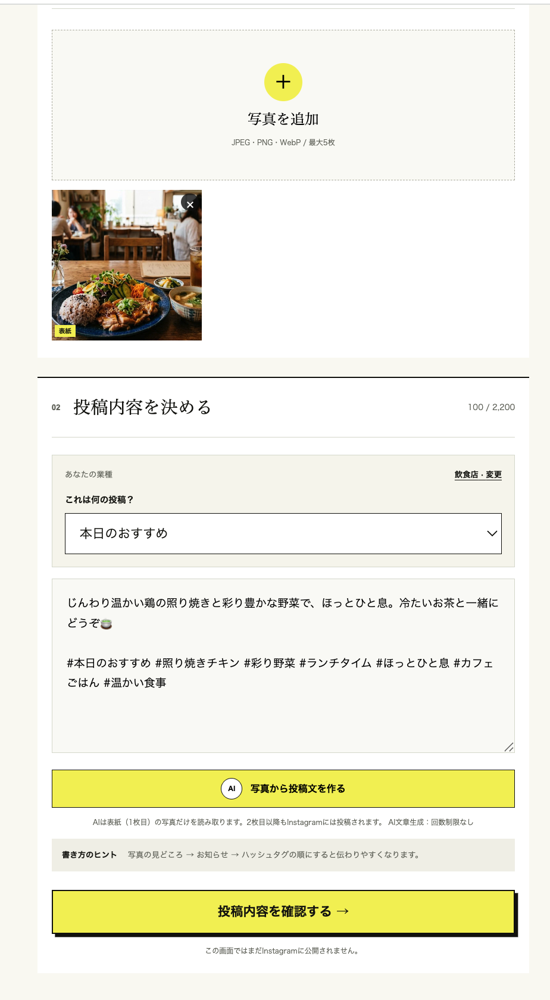
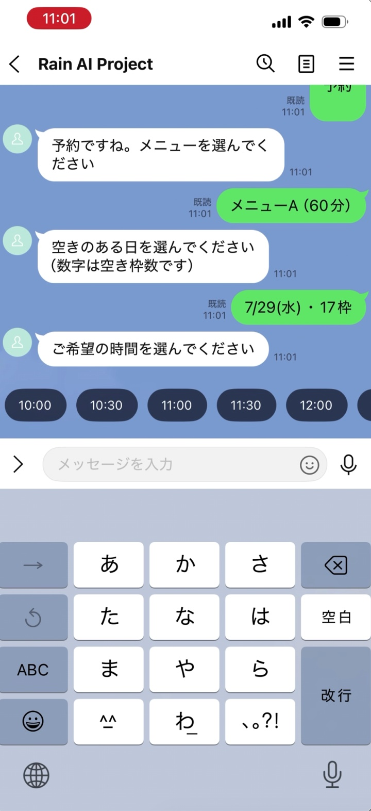
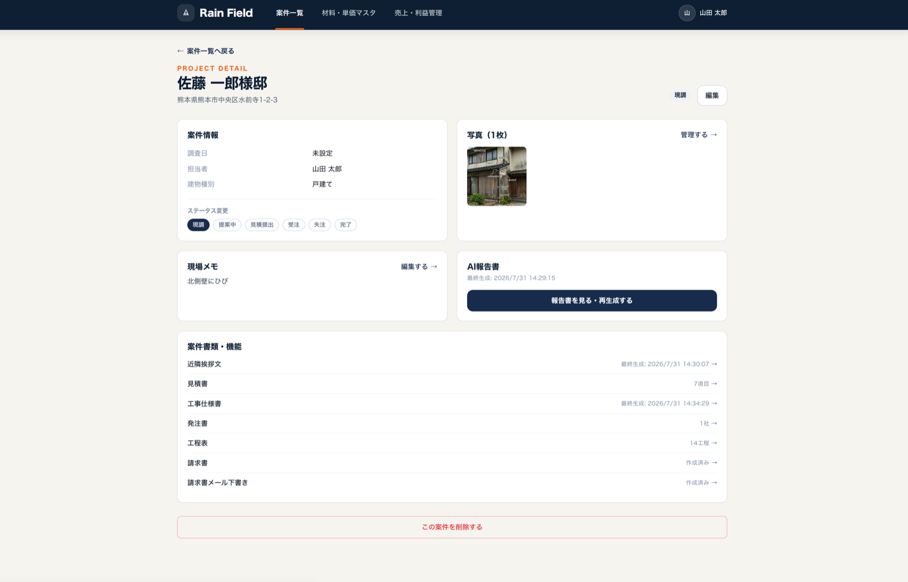
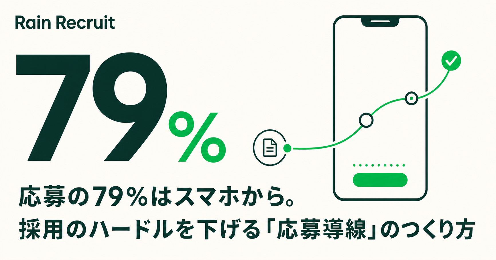
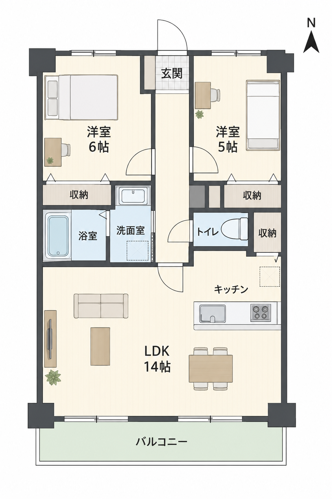
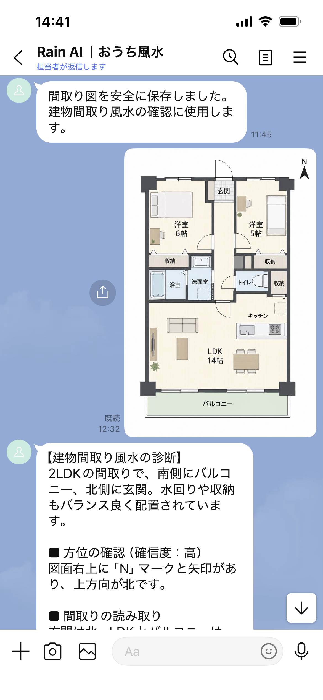

ホームページが更新されない
管理画面を開き、写真を整え、文章を書く。日々の業務の後では続きにくい作業です。
ホームページを納品するだけではなく、地域の仕事が継続的に伝わり、問い合わせにつながるところまで。
良い商品や技術があっても、伝える手段と更新する仕組みがなければ知られません。Rain AI自身がプロダクト開発で直面した課題から、制作後の運用までをサービスの中心に据えています。
管理画面を開き、写真を整え、文章を書く。日々の業務の後では続きにくい作業です。
写真はあるのに、投稿文、媒体別調整、投稿時間の設定が負担になって眠ってしまいます。
更新、プラグイン、フォーム、権限。事業者が本来の仕事以外の保守を抱える構成を見直します。
デザイン、検索、広告、更新を別々に考えません。必要な機能だけを組み合わせ、事業に合わせて小さく始めます。
人にも検索にもAIにも内容が伝わり、広告や問い合わせの受け皿になるWebサイトを設計します。
現場で撮った写真と一言を一次情報として残し、HP記事とSNS原稿へ展開する運用を設計します。
ChatGPT広告を含む新しい流入経路を見据え、広告、LP、計測、改善がつながる導線をつくります。
複雑な管理画面を覚えるのではなく、普段の仕事の延長で更新できる体験へ。AIに任せきらず、事実と公開判断は人が持ちます。
Next.jsを軸に、公開画面と更新機能を分け、検索・AI・広告・外部サービスへ接続しやすいWeb基盤を設計します。
WordPressが適する案件もあります。ただし一般的なプラグイン依存構成では、更新対象や公開管理画面が増え、保守が複雑になりやすい側面があります。
表示、更新、外部連携を役割ごとに設計。企業情報を人にも検索エンジンにもAIにも伝わる構造で管理します。
Next.jsを使うだけで安全性や検索順位が保証されるわけではありません。Rain AIは、構成・実装・公開後の運用までを一つの設計として扱います。
不要な処理を減らし、スマートフォンでも情報へ早く到達できる構成にします。
ページ構造、FAQ、会社・サービス情報を整理し、機械にも意味を理解しやすくします。
管理画面や多数のプラグインに依存せず、フォームはサーバー側でも検証します。
AIチャット、LINE、予約、広告計測など、事業の成長に応じて拡張します。
AI、LINE、予約、採用、業務管理。実用システムをゼロから作った経験を、Web制作、外部連携、安全設計へ還元します。

AI CONTENT / PUBLISHED写真から投稿文とハッシュタグを生成。発信を続ける難しさから生まれた、今回の更新構想の原点です。
詳しく見る →
LINE / RESERVATION使い慣れたLINE上でメニュー、日付、時間を選択。予約受付から管理までをつなぐ仕組みです。
詳しく見る →
BUSINESS SYSTEM / COMPLETE案件、材料、見積、発注、請求、利益管理をつなぐ、小規模工務店向け業務管理システム。
詳しく見る →
RECRUITING / LIVE DEMOLINEで質問・応募・面接予約をつなぎ、企業側の採用管理まで支援するシステム。
詳しく見る ↗
REAL ESTATE AI / FREE TRIAL間取り図から方位と部屋配置を読み取り、良い点と改善策を商談用レポートにまとめます。
無料で試す ↗
LINE AI / FREE間取り図・玄関の写真・ラッキーカラーを、使い慣れたLINE上で診断できるAIサービスです。
LINE体験を見る ↗「良いものを作れば売れる」ではなく、
良い仕事が伝わり続ける仕組みまでつくる。
研究開発とAIプロダクト開発を通じて、品質だけでは事業が届かない現実を経験しました。だからRain AIは、Webを作るだけでなく、一次情報をため、発信し、見つけてもらう流れまで設計します。技術に詳しくない事業者にも、代表が直接向き合います。
まだ要件が決まっていなくても構いません。現在の発信や問い合わせで困っていることから整理します。
デザインと公開だけで終わらず、SEO・AEO、広告の受け皿、問い合わせ導線、公開後の情報発信までを一つの仕組みとして設計します。必要に応じてAIチャットやLINE、予約システムとの連携にも対応します。
はい。要件に応じて、管理画面や多数のプラグインに依存しない構成を提案します。更新頻度や社内体制を確認し、運用しやすさと安全性のバランスを設計します。
写真と短い説明からAIが下書きを作り、人が確認したうえでホームページやSNSへ反映する仕組みを開発しています。現在は案件ごとに運用方法をご相談しています。
必要のない管理画面やデータベースを持たない構成を検討し、フォームの入力検証、送信制限、Bot対策、セキュリティヘッダー、権限分離などを要件に合わせて実装します。
はい。熊本県内を中心にしていますが、オンラインで進められる案件は県外からもご相談いただけます。
「HPを作り直したい」「発信が続かない」「AI広告に備えたい」。今ある素材と状況を確認し、必要な順番から一緒に整理します。